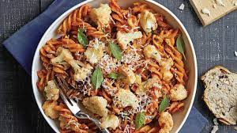

Recipe for Pasta

- Gather the ingredients:
- 8 ounces (225 grams) of dried pasta (e.g., spaghetti, penne, fettuccine)
- Salt (for boiling water)
- Water (for boiling pasta)
- Sauce of your choice (e.g., marinara, Alfredo, pesto)
- Optional toppings or additions (e.g., cooked meat, vegetables, grated cheese, herbs)
- Fill a large pot with water and bring it to a boil. Add a generous amount of salt to the boiling water.
- Add the dried pasta to the boiling water and cook it according to the package instructions until it reaches the desired level of doneness (usually around 8-12 minutes). Stir occasionally to prevent sticking.
- While the pasta is cooking, prepare the sauce of your choice. If using a store-bought sauce, heat it in a separate saucepan over medium heat. If making a homemade sauce, follow your preferred recipe.
- Once the pasta is cooked, carefully drain it in a colander or use a pasta scoop to remove it from the boiling water.
- Transfer the cooked pasta to a large serving bowl or individual plates.
- Pour the prepared sauce over the pasta and toss to coat the noodles evenly. Add any additional toppings or additions at this stage.
- Serve the pasta hot and, if desired, garnish with grated cheese or fresh herbs.
ENJOY!